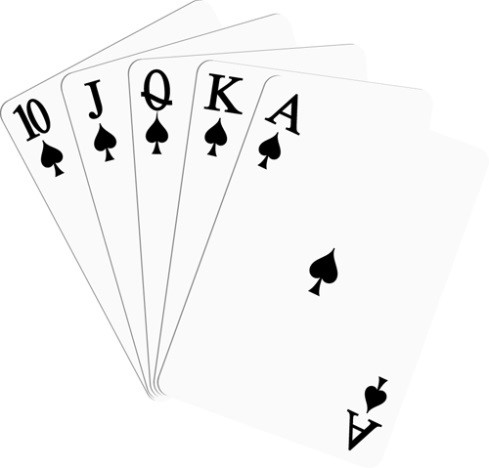

트럼프 카드를 소개하는 웹사이트
하트
다이아몬드
클로버

플레잉 카드는 손에 잡히는 크기의 두꺼운 종이나 얇은 플라스틱으로 만들어진다.
한국에서는 트럼프(trump)라는 명칭으로 불리기도 하는데, 이는 카드패 중의 으뜸패를 가리키는 말이다.
한 묶음의 카드를 카드 한 벌 혹은 한 덱(deck)이라고 한다. 카드는 카드 놀이과 마술에 주로 사용되고, 점(占), 카드쌓기 놀이로도 사용된다.